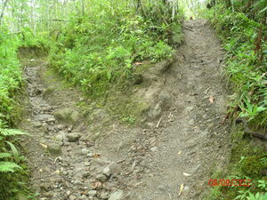

bebalakan 
/bɔbalakan/
1.
n.
a trail marker; an intersection
Ka bebalakan iyan ka temuwanan te langun ne dalan. Iyan seini ka uluwan wey tupuan te me dalan ne nenekegsuwey-suwey.
Due masalig ne egkalihisan due te bebalakan te Simud su dutu nahud egkapunpun ka me etew.
There are many men run-over by vehicle in Simud's intersection road because people used to gather in that place.
Eng. marker; guidepost; roadsign; crossroad; sign; intersection; junction
Ceb. krosing
Online dict status: -
Usage level: R
2.
n.
a name of a place in traditional Matigsalug belief
Cult. This place is the one passed by the soul before it reaches the Meibulan place (the place for souls)
Eng. bebalakan place; place
Online dict status: -
Usage level: R
Updated by: RJH,QDL
Last updated: 10/Mar/2014
This page last updated: 28-Dec-2019
Copyright © 2009-2014, Matigsalug Language Christian Association, Inc